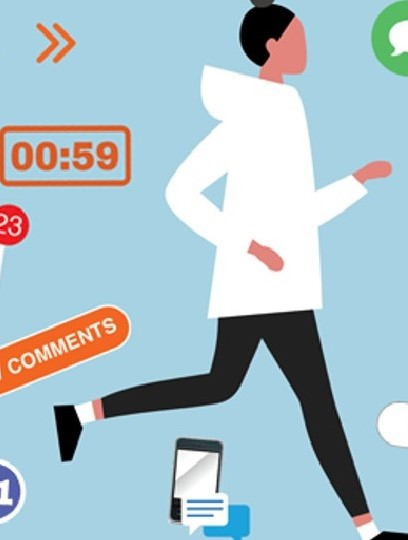
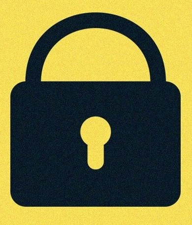

Social media can greatly affect people’s mental health. It can increase anxiety and depression due to social comparisons and feelings of isolation. People often see idealized versions of others’ lives, which can make them feel unhappy with their own. Additionally, excessive use of social media can harm real-life relationships because people might prioritize virtual interactions over face-to-face communication, leading to a sense of loneliness and disconnection from the real world.
Social media is very addictive, and people often spend hours on it without a clear purpose. This addiction can lead to distraction and lower productivity at work or school. The constant notifications and the urge to check updates can interrupt important tasks, making it hard to focus. Over time, this can result in poor time management and a decrease in the quality of work or study, as individuals struggle to balance their online and offline lives.
Social media helps spread fake news and misleading information quickly. This can lead to people forming incorrect opinions and making decisions based on inaccurate information, which affects society as a whole. Misinformation can cause panic and harm public health, as seen with the spread of false information about vaccines. The rapid dissemination of such content makes it challenging to correct false narratives, leading to long-term misconceptions and distrust in reliable sources.
Privacy is a major challenge for social media users. Personal information can be hacked or misused, exposing individuals to risks like cyber theft and blackmail. Many users are unaware of how much data they share online, which can be exploited by malicious actors. Additionally, social media platforms often collect and sell user data to third parties, raising concerns about consent and the potential misuse of personal information. This lack of privacy can lead to serious consequences, including identity theft and financial loss.
